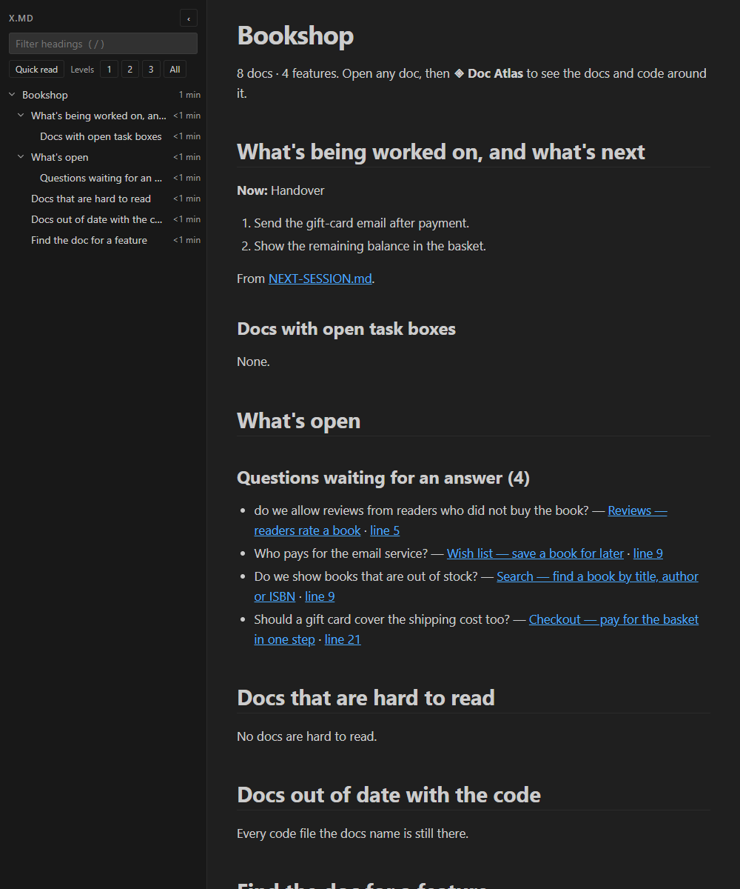
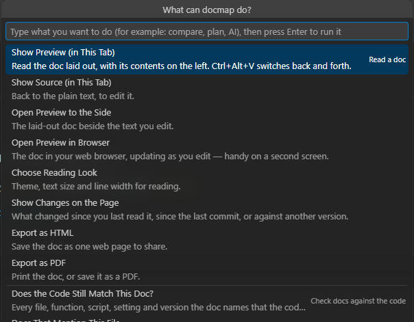
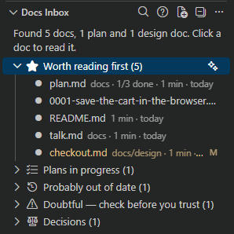
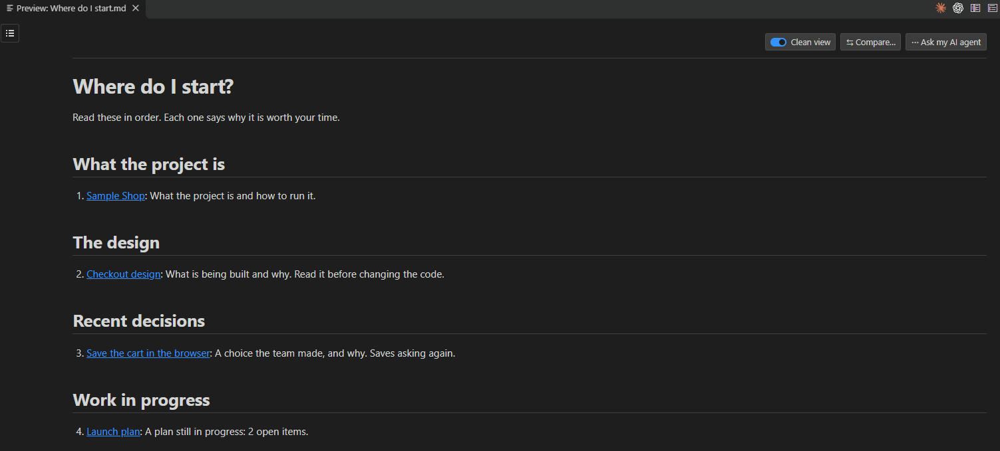
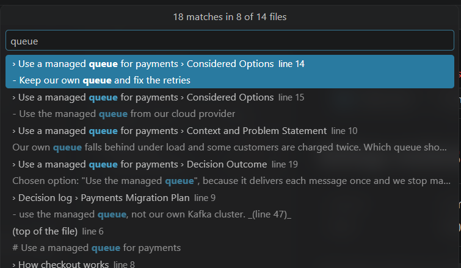
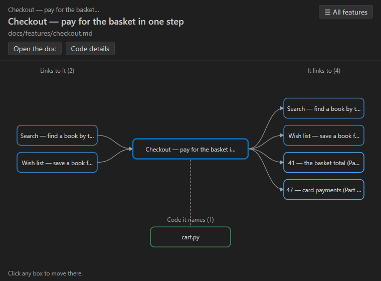
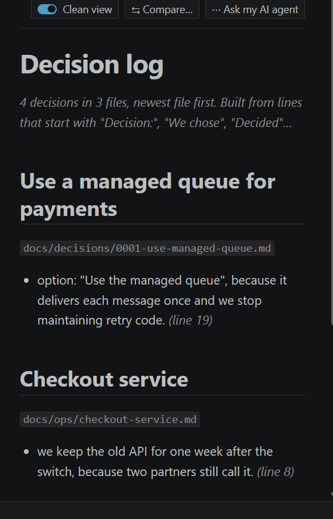
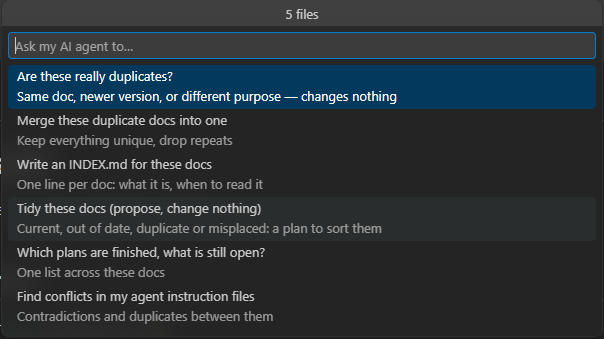
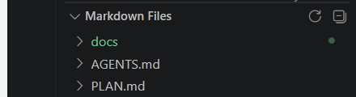

Finding and tidying
A project with dozens of docs is hard to keep track of. See what changed, what is new, every plan, every open question.
- Home
- What can docmap do?
- Docs Inbox
- Where do I start?
- Search all docs
- Doc Atlas
- Plans Dashboard
- Export plans
- Open questions
- My items
- Decision log
- Tidy docs
- Markdown files
-
Home: what's going on
“I'm back on this project. What is being worked on, and what is next?”
One page: what is being worked on and what is next (from your handover note), What's open (questions waiting for an answer, tasks that name you), docs that are hard to read, docs out of date with the code, and every feature.
Where: docmap sidebar → Quick Launch → Home, or ⋯ More → Workspace views → Home. (Setting Home on Start is off by default so VS Code starts instantly.)

-
What can docmap do?
“I know it can do more. I just don't know what, or what it's called.”
Every docmap command in one list, grouped by what you want to do, each with one plain line. Type a word like plan or compare to narrow it; pick one to run it.
Where: Docs Inbox title → ⋯ → What Can docmap Do?, or the last line of the page's ⋯ Ask my AI agent menu, or the Command Palette.

-
Docs Inbox
“Dozens of docs. Which changed, which are new, which are stale?”
Every doc sorted like an email inbox: Changed since you read, New — last 7 days, Possible duplicates, Probably out of date and more. One click opens a doc with what changed marked.
Where: click the docmap icon in the Activity Bar on the far left. Quick Launch sits at the top (one-click Home, Plans Dashboard, Doc Atlas, Open Questions, Search All Docs, New Doc), with Docs Inbox and Markdown Files right below it.

-
Where Do I Start?
“I just joined. There are 60 docs. Where do I even start?”
A short reading order for the project: README, design, specs, recent decisions, plans, runbooks. Each with one line on why it matters.
Where: Docs Inbox title → ⋯ → Where Do I Start?

-
Search All Docs
“Where did we write that down?”
One search box over every doc. Each result shows the headings it sits under, so you know which one you want.
Where: the search button on the Docs Inbox title, or Command Palette → Search All Docs…

-
Doc Atlas
“What else touches this feature: which docs, which code?”
Beside the doc: the docs that link to it, the docs it links to, and the code files it names. Switch between Features and All docs in the sidebar, click any box or +N more node to walk the graph, use ← Back in the header, and check the bottom Legend (Current, Feature, Doc, Code). Code details lists its files, functions, and any names the code no longer has.
Where: Atlas in the preview top bar, or docmap sidebar → Quick Launch → Doc Atlas.

-
Interactive Plans Dashboard
“Status meeting in 10 minutes. Where are we on every plan?”
An interactive view of all workspace Markdown docs and their statuses with visual progress bars, relative paths, owner, next date, a Plans only filter pill, and a Needs attention list of what is overdue, blocked or has no owner.
Where: Plans in the preview top bar, or docmap sidebar → Quick Launch → Plans Dashboard.

-
Open Questions
“What is still undecided, across all our docs?”
Every real question from every doc on one page, grouped by doc: text ending in “?” and lines marked “Question:”. Click line N to open the doc at that line.
Where: ? in the preview top bar, docmap sidebar → Quick Launch → Open Questions, or Home → What's open.

-
My Items
“What did people ask me to do, in all these docs?”
Every open task and question that names you, e.g. “Ask @priya…”.
Where: first add your name in Settings → docmap my names; then What Can docmap Do? → My Items.

-
Decision Log
“Why did we do it this way?”
Every decision written in your docs, on one page, newest first.
Where: Docs Inbox title → ⋯ → Open Decision Log, or the Decisions group.

-
Tidy these docs
“Our docs folder is a mess.”
Your AI agent proposes which docs are current, out of date, duplicated or in the wrong place. It changes nothing until you agree.
Where: Docs Inbox → move the mouse over a group → its sparkle icon → Tidy these docs.

-
Markdown Files list
“Just show me all the docs and their headings.”
Every Markdown file in the project, each with its headings.
Where: the docmap sidebar → Markdown Files.

Want step-by-step examples to try? In VS Code press Ctrl+Shift+P and run Help (All Features).